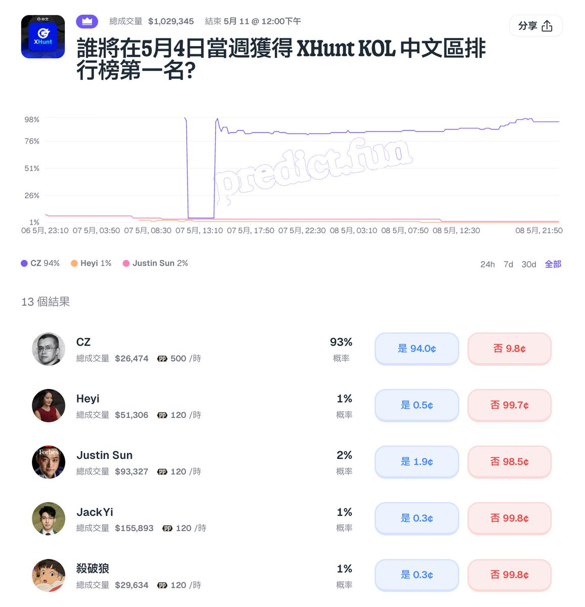

奶昔🥤
@realNyarime
@wolfyxbt @predictdotfun 我要预测杀破狼第一，至少在我心中是最顶级的中文kol，很多东西都值得我好好学习

杀破狼 WolfyXBT
@wolfyxbt
第一次看到我自己出现在预测市场里边
Predict 开这个市场挺好的，总算让我们中文区也有了一点参与感，但是 CZ 这断崖领先啊，我觉得应该把 CZ、一姐和孙哥都排除在外，这样就好玩了，战况会非常混乱哈哈哈。
• 链接：https://t.co/xBv94syZ2U https://t.co/zM9DTcKzu2